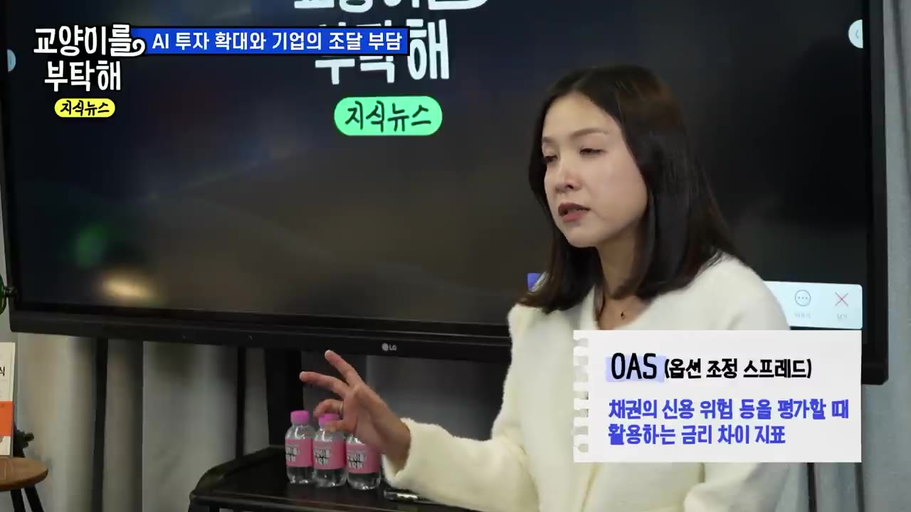
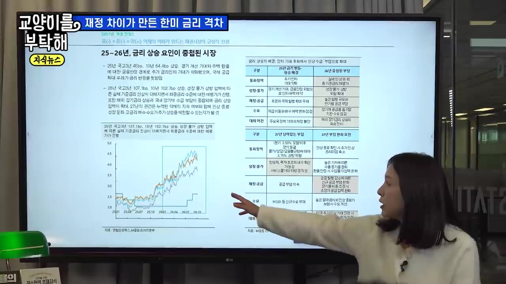
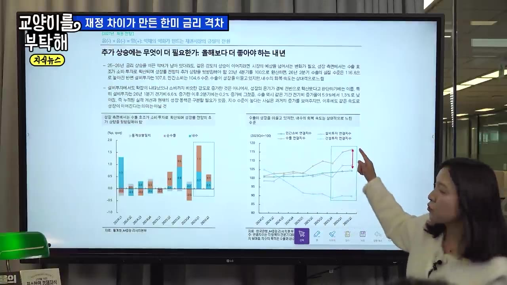
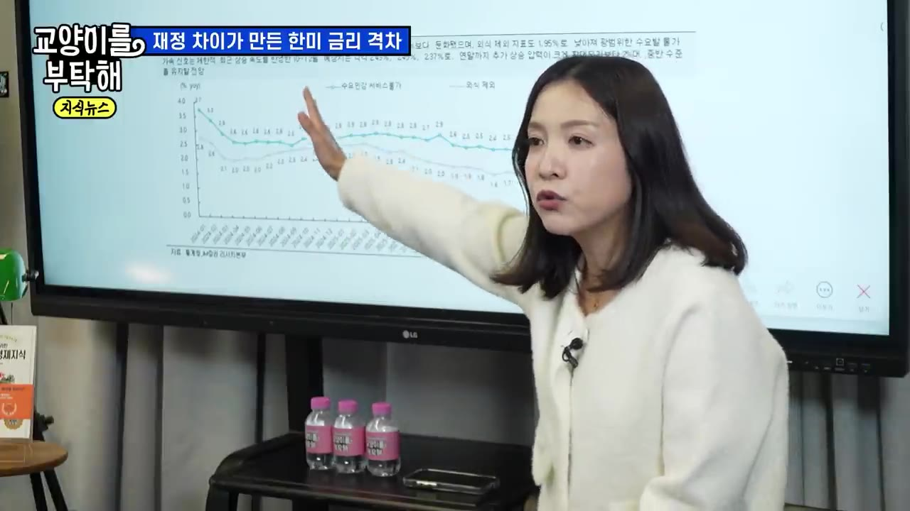
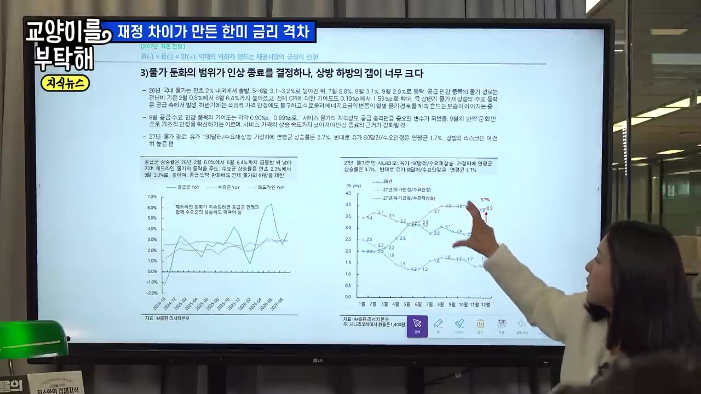
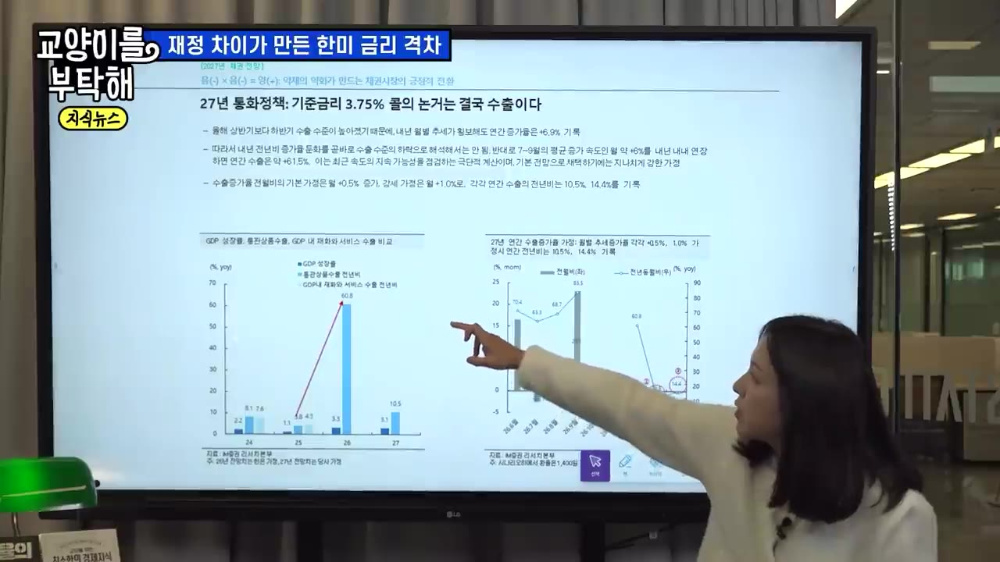
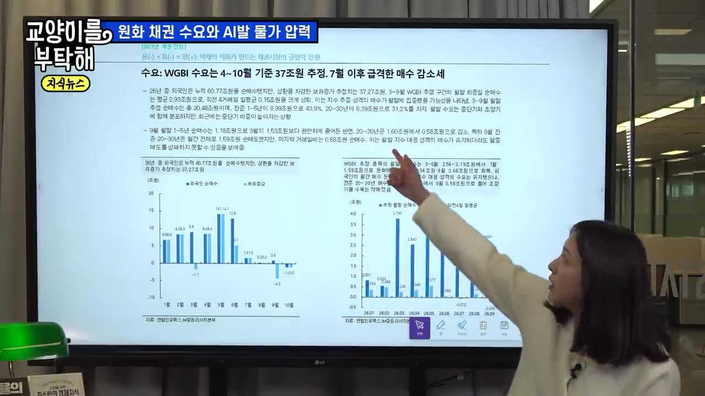
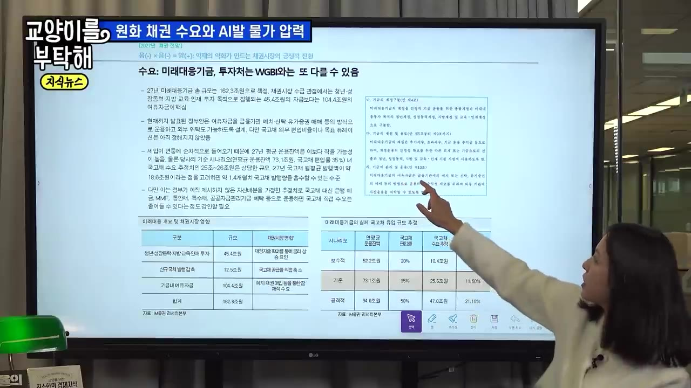
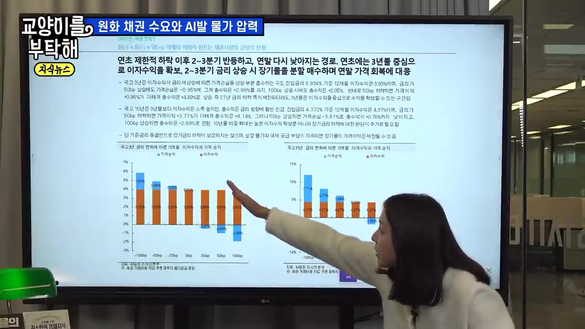

[지식뉴스] "지금 돈의 흐름이 바뀌고 있다" AI 빚폭탄의 진짜 실체…고금리가 길어질수록 한국에 벌어질 일 / 교양이를 부탁해
▶ 원본 영상 보기한눈에 보기
- AI 기업이 14~15% 금리로 돈을 빌리는 상황이 됐습니다. 미국 국채금리는 5.3%에서 5.08%로 내려왔지만 하이일드(투기등급) 회사채 스프레드는 오히려 벌어지고 있어, 시장이 AI 기업의 '성장'보다 '수익성'을 따지기 시작했다는 진단입니다.
- 미국은 재정적자가 2조 달러를 넘고 국채 가운데 차환(만기 국채를 새 국채로 갚는 것) 비중이 80%라서, 구조적으로 금리가 내려가기 어렵다고 봅니다.
- 한국은 수출 호조로 기준금리가 3.5%, 많게는 3.75~4%까지 오를 수 있습니다. 반면 재경부가 남는 세수로 국채 발행을 5조 원 줄이면서 한국 국채금리가 미국보다 먼저 내려왔습니다.
- 내년에는 WGBI(세계국채지수) 외국인 자금, 국민연금(최대 84조 원), 162조 원 미래대응기금이 원화 채권을 살 수 있어 수급상 금리가 내려갈 재료가 많다는 주장입니다.
- 결론은 이렇습니다. 지금은 환율 부담이 있는 미국채보다 이자로 손실을 막을 수 있는 5년 이하 원화 단기채가 유리하고, 대출 비중이 높은 개인은 고금리를 오래 견뎌야 합니다(출연자 의견이며 투자 권유가 아님).
이런 분께 도움이 됩니다
- 금리 뉴스는 보지만 "AI 빚폭탄"과 "한국 금리"가 어떻게 이어지는지 모르는 직장인
- 예금 대신 채권(특히 국채) 투자를 생각하고 있거나, 변동금리 대출이 있어 금리 방향이 궁금한 분
핵심 내용
AI 빚폭탄: 국채금리는 내려도 AI 기업의 금리는 오른다 (0:46)
- 주장: AI 산업 주가와 미국 국채금리가 함께 오른 것은 시장이 AI를 '성장' 관점으로만 봤기 때문입니다. 이제는 투자자가 AI 기업의 수익성을 의심하는 단계로 들어섰습니다.
- 근거: 최근 어떤 AI 관련 기업이 14~15% 금리로 자금을 조달했다는 이야기에 시장이 "이 금리를 감당할 수 있나" 하며 흔들렸습니다.
- 미국 10년물 국채금리는 10월에 5.3%로 고점을 찍은 뒤 5.08%까지 내려왔습니다. 그런데 하이일드 기업 스프레드(국채 대비 더 얹어 주는 금리, 출연자는 'OES'라고 부름, 자막상 불분명. 보통 OAS라고 함)는 계속 벌어지고 있습니다.

- 성장 기대
- 외부 차입
- 공급 과잉
- 손익분기 지연
- 스프레드 확대
- 1성장 기대
"AI는 장기적으로 성장해 생산성을 높인다"는 믿음으로 하이퍼스케일러(대형 클라우드·AI 기업)에 전 세계 자금이 몰림 (1:36)
- 2외부 차입
성장하는 과정에서 기업들이 채권을 발행해 돈을 빌리기 시작함 (2:25)
- 3공급 과잉
미국 정부 부채에 AI 기업 부채까지 더해짐. 수요는 그대로인데 채권 공급이 늘어 가격은 떨어지고 금리는 오름
- 4손익분기 지연
금리가 오르면서 조달·차환 비용이 커져 "2~3년 뒤 흑자"가 3년, 5년, 10년 뒤로 밀림 (5:29)
- 5스프레드 확대
채권자가 더 높은 금리를 요구함. 국채금리가 내려도 기업 조달금리는 그대로이거나 오히려 오름 (6:14)
- 국채와 회사채의 차이: 국채는 미국 정부가 망하지 않는 한 원금이 보장됩니다. 하이일드 채권은 "10~20년 뒤 돈을 잘 벌지"보다 "지금 당장 이자를 줄 수 있는지, 회사가 망하지 않는지"가 중요하기 때문에 잣대가 훨씬 엄격해졌습니다.
- 달러 채권 선호: 유로존 재정 불안(프랑스 시위 등)으로 유로화 자산을 대신할 곳을 찾던 돈이 달러 국채로 들어왔습니다. 그것이 5.3%에서 5.08%로의 하락을 만든 것으로 봅니다.
💡 스프레드가 벌어졌다는 것은 이 금리를 견디지 못하는 기업이 늘어날 수 있다는 신호다.
미국 금리가 못 내려가는 이유: 재정 (6:14)
- 연준 의장 '케빈'(자막상 성 불분명)을 두고 시장 의견이 갈립니다. 물가 때문에 금리를 올릴 것이라는 쪽과 고용 악화로 결국 내릴 것이라는 쪽이 맞서고 있어, 거시 지표로는 방향을 판단하기 애매합니다.
- 핵심 원인인 재정 문제는 하나도 해결되지 않았습니다. 올해 회계연도 재정적자는 당초 예상 1.9조 달러에서 2조 달러를 넘을 것이라는 우려가 나옵니다(블룸버그 인용). 금리 상승에 따른 이자 지출과 전쟁 장기화로 늘어난 국방비가 원인입니다.
- 내년에도 적자를 못 줄이면 국채 발행이 더 늘어납니다. 최근의 금리 하락은 유럽발 이슈로 외국인 수요가 잠깐 들어온 덕분일 뿐입니다. "5.1%까지 왔으니 다음은 4%대"라고 보기에는 풀어야 할 숙제가 너무 많습니다.
한국 국채금리도 급등했다: 기준금리 인상 사이클 (9:09)
- 한국 국채금리는 2025년 하반기부터 약 2년 동안 빠르게 올랐습니다. 전쟁 이후 물가 부담으로 한국은행이 올해 7월과 8월 두 차례 기준금리를 인상했습니다.
- 신현송 총재(자막에는 '신성·신현성' 등으로 엇갈려 표기됨)는 "적어도 두 차례 더, 수출이 내년까지 좋으면 그 이상도"라는 취지의 발언을 간접적으로 하고 있다고 합니다.

- 현재 3.0%
- 11월 3.25%
- 내년 1분기 3.5%
- 매파 시나리오
- 1현재 3.0%
7·8월 두 차례 인상 뒤 수준 (10:10)
- 211월 3.25%
한 차례 추가 인상
- 3내년 1분기 3.5%
기본 시나리오의 정점
- 4매파 시나리오
수출이 더 좋으면 3.75~4%까지도 거론됨 (21:32)
- 오늘 기준 국고채 3년물은 3.8%, 10년물은 약 4.3%입니다. 시장은 이미 기준금리 3.5% 이상까지 가격에 반영하고 있습니다.
반도체 수출이 너무 잘돼서 금리를 못 내린다 (10:39)
- 올해 성장은 한마디로 수출 덕분이었습니다. 6월보다 7월, 7월보다 8월이 좋았고 9월은 서프라이즈였습니다. 반도체 중심의 수출이 성장을 끌어올렸습니다.
- 반면 민간소비, 설비투자, 건설투자는 아직 미미합니다. 제조업 기계수주는 2026년 하반기에 거의 수직으로 상승했지만, 반도체를 뺀 업종은 여전히 부진해 양극화가 뚜렷합니다.
- 그래도 총재는 "수출이 투자와 소비를 끌어올릴 것"이라고 확신하고 있습니다. 올해 GDP 성장률 3.3%, 내년에도 3% 이상을 봅니다.
- 설비투자 증가율은 고금리 정점이던 2분기에 6.3%로 피크를 찍었습니다. 금리가 높아도 투자 지표는 좋았다는 뜻입니다.

- 잠재성장률(무리 없이 낼 수 있는 성장률): 한국은행 추정으로 2000년 5% → 2026년 2% → 2027년 1.8%로 떨어집니다. 하락 이유는 ① 생산가능인구 감소 ② 총요소생산성 하락 ③ 자본투자 증가세 둔화입니다.
- 그동안은 잠재성장률이 계속 떨어졌기 때문에 경기가 조금만 흔들려도 금리를 내려 부양해 왔습니다. 지금은 성장 체력이 커져서, 기업이 버틸 수 있는 크레딧 스프레드도 예전 4%에서 5~6%까지 올라갔을 수 있다는 설명입니다.

💡 이례적인 연속 3%대 성장이 오히려 한국은행이 금리를 못 내리는 이유가 된다.
한국은행이 진짜 걱정하는 것: 수요 쪽 물가 (15:40)
- 전쟁으로 인한 유가 부담은 일시적이라고 봅니다. 걱정하는 것은 성장이 강할 때 수요 쪽에서 계속 올라오는 물가 압력입니다. 이것이 성장을 해치면 최악의 경우가 됩니다.
- iM증권이 세운 내년 한국 소비자물가 시나리오는 다음과 같습니다.
| 가정 | 내년 소비자물가 |
|---|---|
| WTI 평균 130달러 + 수요 측 물가 압력 확대 | 3.7% |
| WTI 평균 60달러 + 수요 측 물가 안정 | 1.7% |
- 두 시나리오의 차이가 크고 결과가 열려 있기 때문에 한국은행이 선제적으로 금리를 올리는 방식을 쓰고 있다는 해석입니다. 총재와 연준 의장 모두 "AI 생산성 향상이 오기 전까지는 인플레이션 압력이 커질 수밖에 없다"고 본다는 설명입니다.

삼성·하이닉스는 빚내서 투자하지 않는다 (18:47)
- 삼성전자는 사실상 채권을 발행하지 않습니다. SK하이닉스는 외부 차입이 있지만 하이퍼스케일러보다 의존도가 훨씬 낮습니다. 두 회사의 고민은 "돈이 많은데 어떻게 쓸지"입니다.
- 미국 하이퍼스케일러는 데이터센터와 전력망에 막대한 자본이 필요해 외부 자금을 끌어다 씁니다.
- 한국 회사채 시장은 대부분 AA·A 이상 IG(투자등급) 채권입니다. 정크본드 기업은 회사채로 자금을 조달하지 않거나 못 합니다. 반면 미국은 오라클처럼 비우량(하이일드) 등급을 받은 AI 관련 기업이 많아 금리에 더 크게 노출됩니다.
💡 고금리의 직격탄은 미국 AI 기업이 맞고, 한국 우량 기업은 상대적으로 버틸 수 있다.
고금리 장기화의 희생양: 가계와 채권 보유 기관 (21:03)
- 가장 타격이 큰 쪽은 변동금리 대출 등 대출과 연동된 개인입니다.
- 기업 가운데서는 채권을 많이 보유한 보험사, 연기금, 공제회, 증권사, 자산운용사입니다. 2년간 금리가 올라 채권 평가손실이 큽니다.
- 금리가 더 오를 수 있다고 보는 근거는 수출입니다. 통관 수출 증가율이 올해 크게 높아질 것으로 전망됩니다(구체적인 수치는 자막에 '60.8%', '6.8%'로 엇갈려 나와 불분명).
- 기본 가정
- 수출 강세
- 금리 함의
- 1기본 가정
내년 월간 수출 증가율 0.5%가 직선으로 이어지면 GDP 성장률 약 3.1% (22:41)
- 2수출 강세
월간 수출 증가율이 1%면 성장률 3.4~3.6%, 중간값 3.5% (23:05)
- 3금리 함의
올해 3.3%보다 내년이 더 좋으면 기준금리 3.75~4%의 배경이 될 수 있음 (23:29)

한국은 국채 발행을 5조 원 줄였다: 미국과 다른 선택 (24:05)
미국 베센트 재무장관의 바이백(국채 되사기)은 채권 총량을 줄이는 것이 아니었습니다. 만기별 발행 비중만 바꾼 '조삼모사'였다는 평가입니다.
한국 재경부는 10월에 15조 원 발행을 예정했다가, 삼성전자·하이닉스 등이 낸 법인세가 많이 걷히자 5조 원은 세수로 갚고 10조 원만 발행하겠다고 발표했습니다(연간 발행 예상은 약 200조 원). 11~12월에도 금리가 안 잡히면 더 줄이겠다고 공표했습니다. 발행 총량 자체를 줄인 조치입니다.
이후 한국 국채금리는 미국보다 먼저 내려가기 시작했고 지금도 빠르게 안정되고 있습니다.
미국은 블루웨이브(중간선거 뒤 민주당 압승)가 와도 AI 산업, 복지, 연금 지출은 여야가 함께 원하는 지출이라 줄이기 어렵습니다. 국채 가운데 차환 비중이 80%인데, 2008년 이전 저금리로 당겨 쓴 부채가 고금리 시기에 만기를 맞고 있어 1~2년 긴축으로는 수치가 내려가지 않습니다.
과거 사례를 보면 2018년에는 인상 종료를 예견하고 국채금리가 빠르게 내려갔습니다. 2023년에는 인상 종료를 발표한 뒤에도 금리가 오히려 더 올랐습니다. "인하 확신이 들기 전까지 금리가 추세적으로 내려가기는 쉽지 않다"는 판단입니다.
💡 한국은 세금으로 빚을 갚아 금리를 내릴 수 있었지만, 미국은 차원이 다른 문제다.
내년 원화 채권으로 몰릴 수 있는 세 가지 자금 (28:39)
① 외국인(WGBI)
- 올해 WGBI 편입으로 8개월 동안 75~90조 원이 들어올 것으로 예상했지만 실제로는 37조 원에 그쳤습니다. 주된 자금인 일본계는 자국 국채금리가 올라 적극적으로 들어오지 않았습니다.
- 내년에는 기준금리 피크아웃(정점 통과)이 예상되고, 비슷한 신용등급인 프랑스와 유로존의 재정이 무너지고 있습니다. 한국(AA-)이 상대적으로 재평가받고 있고, 원화 채권을 담보로 쓰는 사례도 생겼습니다.

② 국민연금 (30:52)
- 국민연금은 국내 주식은 목표 비중보다 많이(오버웨이트), 국내 채권은 적게(언더웨이트) 들고 있습니다. 목표 비중을 기계적으로 맞추기만 해도 원화 채권을 84조 원 더 사야 하고, 절반만 맞춰도 약 40조 원이 유입됩니다.
③ 미래대응기금 162조 원 (35:40)
- 내년 예산안에 162조 원 규모로 잡혀 있습니다. 쓰임은 지출 45조 원, 국채 순상환(바이백) 12.5조 원, 여유자금 104조 원입니다. 여유자금은 세수가 들어오는 대로 쌓이므로 연평균으로는 약 70조 원입니다.
- 기금 가이드라인 '라'항에 "여유자금은 금융기관 예치·신탁·유가증권 매매로 운용하고, 외부 자산운용 위탁이 가능하다"는 조항이 있어 국채를 살 수 있습니다.

- 과거 정부 기금의 국고채 편입률 평균 35%를 적용하면 약 25조 원입니다. 내년 월평균 국고채 발행이 약 18조 원이므로 약 1.4개월치 발행량을 흡수할 수 있는 규모입니다.
💡 재경부가 공급만 눌러 주면, 수급만으로도 한국 채권금리가 내려갈 재료가 쌓여 있다.
그래서 지금은? 원화 단기채가 유리한 이유 (32:25)
- 단기채(국고 3년 등): 이미 기준금리 3.5%(최대 3.75%)를 가격에 반영하고 있습니다. 기준금리가 4% 이상으로 튀지 않고 금리가 지금보다 30~40bp(0.3~0.4%p) 이상 오르지만 않으면 이자(캐리)로 손실을 덮는 구조입니다.
- 장기채: 듀레이션(금리 변화에 대한 가격 민감도)이 커서 이자로 덮을 수 있는 금리 상승 폭이 작습니다. 금리가 확실히 내려간다는 확신이 있을 때 수익이 더 큽니다.
- 국고 3년을 오늘 사서 1년 보유하는 경우를 계산한 결과는 다음과 같습니다(출연자 계산).
| 1년 뒤 금리 변화 | 국고 3년 | 국고 10년 |
|---|---|---|
| 이자 캐리 | 약 3.93% | 3년보다 높음 |
| +100bp 상승 시 | 이자 > 가격손실 → 플러스 | 가격손실이 커서 마이너스 |

- 지금~1분기
- 2·3분기 점검
- 수급 확인
- 장기채 확대
- 1지금~1분기
원화 단기채(5년 이하) 위주로 보유. 금리가 1분기까지 내려올 것으로 봄 (33:18)
- 22·3분기 점검
수출이 월 1~1.5% 서프라이즈를 내 기준금리 4% 우려가 생기는지 확인 (37:37)
- 3수급 확인
연금·국내 기관·외국인 자금 유입이 실제로 확인되는지 봄
- 4장기채 확대
수출 둔화와 자금 유입이 확인되면 원화 장기채 비중을 늘림
- 미국채와 비교하면, 미국채는 환율이라는 더 큰 부담에 노출됩니다. 원화 채권은 높은 캐리를 주고 비슷한 나라들보다 금리도 높습니다.
- 개인의 미국 국채 순매수는 올해 3분기(7~9월)에 5조 원(예탁결제원 데이터)이었고, 주로 5년 이하 단기채였습니다. "미국 단기금리는 상단이 약 4.5%"라는 인식 때문이었다고 합니다.
연준과 AI 인플레이션: 25bp 인상으로는 못 잡는다 (39:09)
- 다음 주 FOMC를 앞둔 출연자의 견해입니다. AI 투자 사이클이 만드는 인플레이션은 25bp나 50bp 소폭 인상으로는 잡기 어렵다고 봅니다.
- 1970년대 아서 번스 시절에는 인상 도중 정치·성장 문제로 완화로 돌아섰습니다. 그 결과 연준 신뢰가 떨어지고 물가가 다시 올라 장기금리가 폭등했습니다. 폴 볼커 시절에는 초반에 강하게 인상해 물가와 장기금리가 정점을 찍고 내려갔습니다.
- 출연자는 강한 초기 인상이 맞다고 봅니다. 트럼프와의 정치적 갈등으로 그렇게 하지 못하면 연준이 인플레이션을 잡을 시기를 놓치고 장기금리가 더 오를 위험이 있다고 합니다.
- "내가 AI 기업이라면 조달금리가 25~50bp 올라도 투자를 그만두지 않는다"는 설명입니다. 그래서 정책금리가 아닌 다른 통화정책 수단이 필요하고, 연준이 AI 영향 연구 TF를 꾸린 것도 그런 맥락이라고 봅니다.
마무리: 금리는 쉽게 내려가지 않는다 (42:45)
- 피지컬 AI로 생산성 혁명은 오겠지만, 그 전에 과도한 투자 사이클로 인플레이션 시대가 길게 먼저 온다고 봅니다. 그에 따른 명목성장률 상승이 중립금리를 끌어올리므로 한국은행은 오랫동안 높은 기준금리를 유지할 수밖에 없다는 결론입니다.
따라 해보기
아래 내용은 출연자의 의견을 정리한 것으로 투자 권유가 아닙니다. 투자 판단과 책임은 본인에게 있습니다.
준비물
- 대형 증권사 계좌와 MTS(모바일 증권 앱). 출연자는 "대형 증권사 MTS에서 10만 원 단위로 원화 채권·미국 국채를 살 수 있다"고 했습니다(iM증권에는 없다고 함).
- 최소 금액 10만 원 단위
- 소요 시간: 계좌가 있다면 몇십 분(보충)
단계별 방법
- 증권사 확인
- 채권 메뉴 진입
- 단기 국채 고르기
- 수익률 확인
- 10만 원 단위 매수
- 보유하며 점검
- 1증권사 확인
쓰는 대형 증권사 MTS에서 장외채권 또는 개인 채권 매수 서비스가 있는지 확인 (33:42)
- 2채권 메뉴 진입
MTS의 채권 매수 메뉴로 들어감 (영상에서 생략됨)
- 3단기 국채 고르기
만기 5년 이하, 출연자가 예로 든 국고채 3년물처럼 남은 만기가 짧은 원화 국채를 고름 (32:25)
- 장기채(10년물)는 지금은 피하라는 의견
- 4수익률 확인
표시된 매수 수익률이 현재 국고 3년 금리(영상 기준 약 3.8~3.9%) 수준인지 봄 (보충)
- 510만 원 단위 매수
감당할 수 있는 금액으로 매수
- 6보유하며 점검
금리가 출렁여도 30~40bp 이내면 이자로 방어된다고 보고 보유. 2·3분기에 수출·자금 유입을 보고 장기채 확대를 판단 (37:37)
따라 할 수 있는지 점검
- ✅ 바로 따라 할 수 있음: 어떤 상품(5년 이하 원화 국채)을 언제(지금~1분기) 사는지, 판단 기준(금리 +30~40bp, 기준금리 4% 이상 여부)
- ⚠️ 1단계 「증권사 확인」: 어느 증권사인지 영상에 이름이 나오지 않음 → 쓰는 증권사 고객센터나 앱 검색에서 "장외채권", "국채 매수"를 검색해 확인 (보충)
- ⚠️ 2단계 「채권 메뉴 진입」: 메뉴 이름과 위치가 영상에 없음 → 증권사마다 다르니 앱 안에서 "채권" 메뉴 검색 (보충)
- ⚠️ 3단계 「단기 국채 고르기」: 구체적인 종목명(발행 회차)이 나오지 않음 → 남은 만기 3년 안팎의 '국고채'를 골라 매수 수익률과 남은 만기를 비교 (보충)
- ⚠️ 비용: 증권사 매수 수수료와 이자 과세는 영상에 없음 → 매수 화면의 세전·세후 수익률을 확인 (보충)
- ❓ 출연자는 한국 채권이 "1분기까지는 내려온다"고 하면서도 "2·3분기에는 다시 오를 위험이 있다"고 해, 장기채로 넘어갈 시점은 지표를 확인한 뒤 판단해야 함
확인 방법
- MTS 보유 잔고에서 채권 종목, 매수 수익률, 만기일이 보이면 매수가 끝난 것입니다(보충).
- 이후 국고 3년 금리가 매수 시점보다 30~40bp 넘게 오르는지 보면, 출연자가 말한 '이자로 방어되는 범위'인지 확인할 수 있습니다.
막히면
- 장기채(10년)는 금리가 100bp 오르면 1년 보유해도 손실이 납니다. 금리 하락 확신이 없으면 단기채 위주로 가져갑니다.
- 미국채는 환율 부담이 더 크다는 점을 기억해야 합니다.
- 기준금리가 4% 이상으로 튀는 시나리오(수출 월 1~1.5% 서프라이즈)에서는 단기채도 다시 가격이 조정될 수 있습니다.
기억할 숫자·인용
- AI 관련 기업 조달금리 14~15%
- 미국 10년물 국채금리 5.3% → 5.08%, 미국 재정적자 2조 달러 초과(당초 1.9조), 차환 비중 80%
- 한국 기준금리 3.0% → 3.25%(11월) → 3.5%(내년 1분기), 매파 시나리오 3.75~4%
- 국고 3년 3.8%, 10년 약 4.3%, 국고 3년 이자 캐리 약 3.93%
- 한국 성장률: 올해 3.3%, 내년 기본 3.1%, 수출 강세 시 3.5%. 잠재성장률 5%(2000) → 2%(2026) → 1.8%(2027)
- 물가 시나리오: WTI 130달러면 3.7%, 60달러면 1.7%
- 10월 국채 발행 15조 → 10조(5조 축소), 연간 발행 예상 약 200조
- WGBI 유입: 예상 75~90조 vs 실제 37조
- 국민연금 비중을 다 맞추면 84조, 절반만 맞추면 약 40조
- 미래대응기금 162조 = 지출 45조 + 순상환 12.5조 + 여유자금 104조 → 국채 매수 가능 약 25조(월 발행 18조의 1.4개월치)
- 개인 미국 국채 순매수 3분기 5조 원
- "내가 AI 기업이라면 조달금리가 25~50bp 올라도 투자를 그만두지 않을 것 같아요." (41:32)
생각해볼 점
- (영상 내용) 원화 채권 수급 개선은 국민연금이 비중을 맞추고, 미래대응기금이 국채를 사고, 외국인이 들어온다는 가정이 겹쳐야 성립합니다. 올해 WGBI 유입도 예상의 절반에 못 미쳤듯 실제 규모는 달라질 수 있습니다.
- (내 의견) 출연자 스스로 기준금리 3.5~4%의 상방 위험을 인정하고 있습니다. "단기채는 안전하다"는 말도 기준금리 4% 이상이 오지 않는다는 전제가 있을 때만 성립한다는 점을 기억해야 합니다.
- (내 의견) 수출 호조가 반도체에 집중되어 있습니다(영상도 업종 간 양극화를 지적). 그러니 반도체 경기가 꺾이면 성장, 세수, 국채 발행 축소 논리가 함께 흔들릴 수 있습니다.
바로 해볼 일
- 내 대출이 변동금리인지, 다음 금리 변경일이 언제인지 확인하기
- 쓰는 증권사 MTS에서 "장외채권"이나 "국채" 매수 메뉴가 있는지, 국고채 3년물 매수 수익률이 얼마인지 확인해 보기
- 11월 한국은행 금통위에서 기준금리 3.25% 인상 여부와 재경부의 11~12월 국채 발행 계획을 일정에 표시해 두기